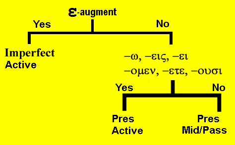

| Greek | Meaning | Notes |
|---|---|---|
| ἀποθνήσκω | I die | |
| ἀποκτείνω | I kill | |
| δέχομαι | I receive | |
| ἑτοιμάζω | I prepare | |
| θεραπεύω | I heal | cognate: therapeutic |
| πιστεύω | I believe | |
| νῦν | now | |
| ἔτι | yet, still | |
| οὐκέτι | no longer | |
| τότε | then | |
| σκοτία | darkness | |
| μέν ... δέ | on one hand, on the other hand | used in contrasting statement. Sometimes the μέν is not translated while δέ is translated as "but." |
| ἀδύνατος | unable | cognate: dynamite |
| ἐξουσία | authority |
Imperfect Verb
| Singular | ||
| Form | Meaning | |
|---|---|---|
| 1st | ἔλυον | I was loosing |
| 2nd | ἔλυες | yous were loosing |
| 3rd | ἔλυε | he/she/it was loosing |
| Plural | ||
| Form | Meaning | |
| 1st | ἐλύομεν | we were loosing |
| 2nd | ἐλύετε | youp were loosing |
| 3rd | ἔλυον | they were loosing |
- The imperfect is made of these four elements: augment, stem, thematic vowel, endings
The Augment
- The augment adds ε at the beginning of the word.
- The augment indicates that the tense is in the past time.
- When a verb begins with a consonant, a simple ε is placed in front to make a new syllable.
- βάλλω = I am throwing
- ἔβαλλον = I was throwing
- When a verb betins with a vowel, the augment joins with the vowel to make a longer vowel
- ε + α = η thus ἀκούω becomes ἤκουον
- ε + ε = η thus ἐγείρω becomes ἤγειρον
- ε + ο = ω thus ὀφείλω becomes ὤφειλον
- In compound verbs, the augment comes after the preposition and just before the verb stem.
- Thus ἐκβάλλω becomes ἐξέβαλλον.
- Note that for good sound ἐκέβαλλον changes to ἐξέβαλλον.
- If the preposition ends with a vowel, some joining or elision takes place.
- Thus ἀποκτείνω (which is ἀπὸ + κτείνω) would become ἀπο + ε + κτείνον
- but the οε join together to become just ε with the resulting form: ἀπέκτεινον.
- ἀπάγω becomes ἀπῆγον
- ἀναβαίνω becomes ἀνέβαινον
- καταβαίνω becomes κατέβαινον
- ἀποστέλλω becomes ἀπέστελλον
- συνάγω becomes σύνηγον
- ἐκβάλλω becomes ἐξέβαλλον
- Thus ἐκβάλλω becomes ἐξέβαλλον.
- Some exceptions to remember:
- θέλω becomes ἤθελον
- μέλλω becomes ἤμελλον
- ἐχω becomes εἶχον
The stem
- remove the final omega from the vocabulary word
- thus λεγ- is the stem of λέγω
The thematic vowel
- The thematic vowel is also called the "variable vowel"
- The thematic vowel is ο in front of an ending which begins with μ or ν.
- The thematic vowel is ε in front of an ending which does NOT begin with μ or ν.
The imperfect endings
- -ν, -ς, none, -μεν, -τε, -ν (or -σαν)
- Here's how to learn them. Remember one of the following silly sentences:
- Now some blank men tell news (Now some blank men tell news)
- Norma says nothing, men tell Norma
- Now some space men test new sand
- Notice that the first person singular and the third person plural have identical forms.
- Only the context will reveal the meaning.
Imperfect meaning
- The imperfect tense indicates on-going action in past time
- While the present form ἀκούω means I am hearing
- the imperfect form ἤκουον means I was hearing
- Both the present tense and the imperfect tense describe continuous or on-going action.
- The difference is the time of the action.
- The action may be continued as in I was hearing
- The action may be repeated as in I kept hearing
- The action may be customary as in I used to hear
- The action may be attempted as in I tried to hear
- The action may be initiated as in I began to hear
The forms of the imperfect indicative of εἰμί
| Singular | ||
| Form | Meaning | |
|---|---|---|
| 1st | ἤμην | I was |
| 2nd | ἦς | yous were |
| 3rd | ἦν | he/she/it was |
| Plural | ||
| Form | Meaning | |
| 1st | ἦμεν | we were |
| 2nd | ἦτε | youp were |
| 3rd | ἦσαν | they were |
VERB IDENTIFICATION
- To identify a verb, ask yourself the following questions:
- Does it have an augment?
- Yes, then it is a past tense. The only past tense you've studied is Imperfect
- No, then it is present tense
- Does it have the active endings?
- If yes, it is present indicative active.
- If no, then it is present indicative middle/passive.
- Does it have an augment?

Translate the following:
- τότε ἠκούομεν τῆς φωνῆς αὐτοῦ, νῦν δὲ οὐκέτι ἀκούομεν αὐτῆς.
- ἐκεῖνοι μὲν οἱ ἁμαρτωλοὶ μένουσιν ἐν τῇ σκοτίᾳ, οὖτοι δὲ εἰσέρχονται εἰς τὴν βασιλείαν τοῦ θεοῦ.
- ἐν ἐκείναις ταῖς ἡμέραις ὁ μεσσίας ἐθεράπευε τοὺς ὄχλους καὶ ἔσωζεν αὐτοὺς ἀπὸ τῶν ἁμαρτιῶν αὐτῶν.
- ἡτοίμαζον τὰς καρδίας αὐτῶν πονηροὶ ἄνθρωποι ὅτι ἤκουον τῶν γραφῶν καὶ ἐπίστευον αὐτός.
- διὰ μὲν τήν ἀγάπην τοῦ θεοῦ ἀποθνήσκομεν ἐν τῇ βασιλείᾳ τοῦ θεοῦ, δεχόμεθα δὲ τὴν ζωὴν σὺν τῷ υἱῷ αὐτοῦ.
- πονηροὶ ἦτε, ἀγαθοὶ δέ ἐστε.
- νῦν μὲν διδασκόμεθα ὑπὸ τοῦ κυρίου, τότε δὲ ἐδιδάσκομεν τὴν ἐκκλησίαν.
- ὁ μεσσίας ἀπέστελλεν ἀγγέλους πρὸς ἡμᾶς.
- οἱ ἄνθρωποι οἱ πονηροὶ ἀπέκτεινον τὰ τέκνα σὺν τοῖς διδασκάλοις αὐτῶν.
- ἐν τῷ κόσμῳ ἦν καὶ ὁ κόσμος οὐκ ἐγίνωσκεν αὐτόν.